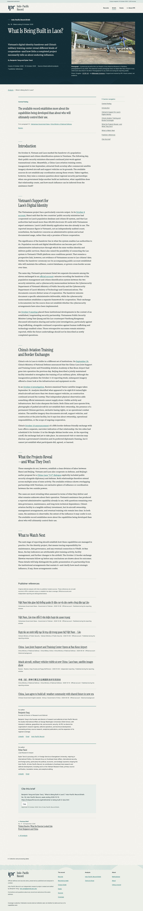
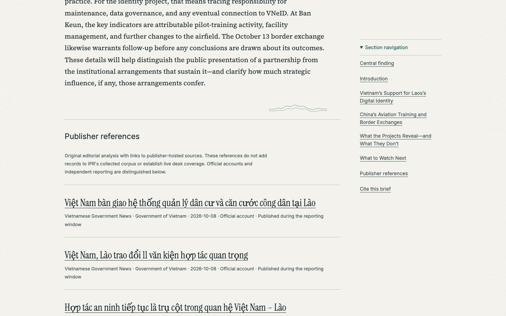
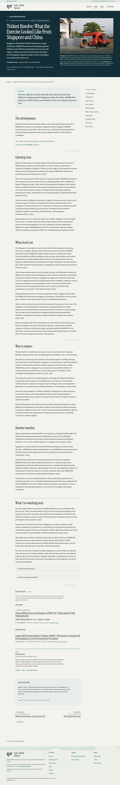
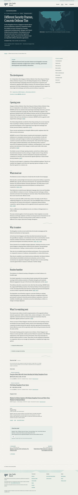
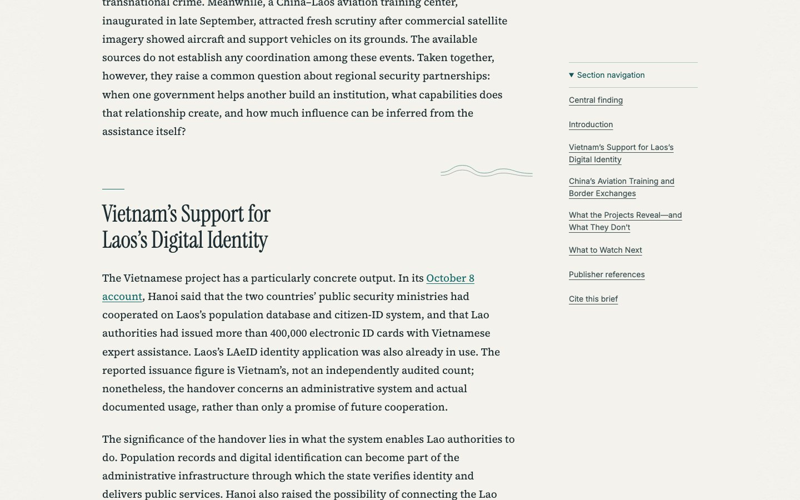

Baseline: approved #588 at d5c3ca5169. A quiet angular profile occupies existing whitespace, outside text. Local Chromium evidence; no merge or deployment.
Open native-size capture




Complete Laos · Complete Trident
